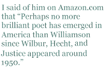
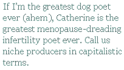

When I met Greg Williamson at West Chester, his first book, The Silent Partner, had just been published by Story Line. I was about fifteen pages into it, far enough to know the diamond from the dust. Toward the end of the conference, Greg and I were in an elevator with a very senior figure who was totally irked that we didn’t know who he was. Greg didn’t know who I was either, but I already realized that he was a far better poet than the very senior figure. After we reached the lobby, and our elder stalked off, I introduced myself.
The Silent Partner pinned my ears back, although it seemed excessively focused on iteration — poetry about poetry. In his twenties Greg was capable of metrical acrobatics I didn’t attempt until I was in my forties. He also deployed the argot and diction of the Nineties, influenced by popular music, which he conjoined with the older music of canonical verse. He delighted in literary references, sprinkling them everywhere; but many of his poems were darkened by a sardonic sense of humor.
Two years later my first book had been published, and I gave a reading at the Chapters Bookstore in downtown Washington, DC. In the audience were Greg and Anthony Hecht. I began with two of my boy scout poems. I said that I was doing so because Greg was present, and that we had three things in common. We were Eagle Scouts, we were scrupulous metrists, and we were both fabulously good looking.Tony Hecht looked at me, looked at gorgeous Greg, and nearly fell from his chair laughing. Greg turned a hue I’d last seen from a duck blind at dawn.
Greg’s second collection, Errors in the Script, appeared in 2001. For the maturing poet, iteration was giving way to a concern with the mind and its perceptions. I said of him on Amazon.com that “Perhaps no more brilliant poet has emerged in America than Williamson since Wilbur, Hecht, and Justice appeared around 1950.” Though I have encountered many gifted youngsters since then, my opinion remains unchanged.
The central third of Errors in the Script is a tour de force: twenty-six “Double Exposures,” a unique form of Greg’s invention. It’s hard to imagine anyone else attempting it. Each poem is three poems, two in heroic couplets, and the third in quatrains. The left and right-hand poems interleave like fingers in hands folded in prayer to form the third, and the third is far greater than the sum of the parts. The same could be said of the entire work, which becomes an extended meditation on life, on consciousness and perception:
IX. View of a Neighborhood in West Nashville with UFO
…Five years have passed…but you might ask, monjeers,
What’s that up in the corner? It’s, uh, well
…Why I enlarged this. What you’re seeing here’s
A UFO. I haven’t been able to tell
…My old hometown. And though I can’t detect
If it’s a blemish on the lens or, say
…If I’ve deceived myself, I recollect
The official mess kit of the BSA,
…The sound of two-stroke engines, wreaths of smoke,
Hovering out of context, high above
…Forsythia, hot asphalt. These evoke
My former home, or else the vision of
…My former home. But nowadays I see
A spaceship. It’s the sort of craft that brings
…Perplexing thoughts of what’s become of me.
An alien to old familiar things.
by Greg Williamson
When Alan saw these poems, he feared for our young friend. “A mind divided against itself cannot stand.” Greg was obsessed with reflection and duplication. “The Silent Partner” was his own imagined double. A favorite poem of mine was naturally one that reflected some of his odd attributes. He took such a shine to it that he used it to illustrate lineation for his poetry students at Johns Hopkins University.
The Abyss
His subterfuge is deep
and devious is his task,
but the man behind the mask
I take off when I sleep
is the one friend I can ask
to look before I leap.
Now Waywiser Press has just published Williamson’s third book, A Most
Marvelous Piece Of Luck. It is a sequence of 69 sonnets in which the
title of each poem is reprised as its last word and in which the poem
turns on disillusionment. To give you a sense of his ambition, the
first two sonnets are entitled “Time” and “Space”. Here’s one for the
middle-aged, or those who recall middle age fondly.
Fire
Imagine that first fire, the doubletakes
Among the vegans, cold, dark, wet: Cave guy
Strikes flint and, boom, you’re grilling mammoth steaks,
You’re holding hands, you’re hooking up, you’re dry,
And (years of R&D) it catches on,
Brick ovens, candlelight, of course appalling
Losses, but still, fondue, filet mignon,
And the three-alarm, fanned fire of your first calling
Until there’s no more call for you, you box
Up your life’s work, archive the ardencies,
The once hot, test-tube topics, and retire
To country climes, keeping an eye on the phlox
In your old field, avuncular now, at peace
With not quite having set the world
on fire.
by Greg Williamson
[ Editor’s note: Williamson’s book of sonnets, A Most Marvelous Piece Of Luck, was published in April and can be ordered directly from Waywiser Press. ]
Not yet broke from farming, I donated significant sums to fund West Chester scholarships for young attendees. One of the first “thank you” letters I received was from Catherine Tufariello.She included a sheaf of accomplished poems. Some, such as “Moving Day” and “Free Time,” I was delighted to see again between the covers of Keeping My Name, published in 2004.
Catherine translates Cavalcanti and Petrarch, writes beautifully on stories of women in the Bible (Rebekah, Ruth, Mary Magdalene), crafts polished ekphrastic poetry. In short, her work couldn’t be much more different from mine. The fifth section of her book is devoted to the long struggle she and Jeremy had with her infertility — a medical quest that culminated in the birth of their daughter, Sophie, whom I renamed after E. R. Eddison’s demi-goddess, Queen Sophonisba. Here is Sophie’s first epigrammatic appearance on a sonogram:
First Contact
Small astronaut, no longer than my thumb,
Beached on a terra nova red as Mars,
How unimaginably far you’ve come,
Dreaming of that dark voyage through the stars.
by Catherine Tufariello
Or is that a sonogrammatic appearance in an epigram? My introduction to Queen Sophonisba occurred at West Chester. I was outside the student union, smoking, and Catherine was holding her baby in her arms. I think it was the Hope scholar, Robert Darling, who asked of the child “Where does the red hair come from?” I rolled my eyes and Catherine hissed “Don’t tell Jeremy!”
If I’m the greatest dog poet ever (ahem), Catherine is the greatest menopause-dreading infertility poet ever. Call us niche producers in capitalistic terms. Catherine’s poems on the quest to conceive can be as funny as they are heart-wrenching. Here’s the conclusion of “Useful Advice”:
It’s true! Too much caffeine can make you sterile.
Yoga is good for that. My cousin Carol —
They have these ceremonies in Peru —
You mind my asking, is it him or you?
Have you tried acupuncture? Meditation?
It’s in your head. Relax! Take a vacation
And have some fun. You think too much. Stop trying.
Did I say something wrong? Why are you crying?
When Sam Gwynn was hastening to compile Poetry, A Pocket Anthology for Penguin, he asked me to track down Williamson’s “Kites at the Washington Monument.” In a book that opened with Chaucer, Sam was choosing a single poem to represent Chaucer’s youngest heirs. When Greg didn’t email it promptly, Sam chose Catherine’s “Useful Advice.”
Appealing to a broad range of emotions within the confines of a single poem is a trick that my favorite young poets regularly bring off. As an example (and an anodyne for cat-fancying readers who dutifully plod through my hunting poems), here’s a cat poem. As dog lover, I’m not easily impressed by cat poems. I hadn’t seen a really good one since Henri Coulette’s epitaph for his Jerome, who is probably playing stalk-the-tail with Bottlebrush right now.
Epitaph for a Stray
Here lies Bottlebrush the cat,
Who had a friend in every house,
And could reduce a catnip mouse
To fuzz in sixty seconds flat.
Lots of things he didn’t have —
A home, good looks, or many years,
A pedigree or prudent fears,
A collar or a proper grave.
But he had playfulness and pluck,
Street savvy, skill in all the arts
Of drawing and subduing hearts,
And for a while, a run of luck.
The day his luck ran out for good,
The friends he’d made (all strangers) cried,
And for a while, the night he died,
The street became a neighborhood.
by Catherine Tufariello
I first encountered A.E. Stallings on Rhina Espaillat’s screened-in porch, the smoking zone when I am writer-in-residence at Newburyport. Not Alicia’s elfin presence, but her first book, Archaic Smile. Rhina had forced this offering by an upstart poetess upon me, and the poem to which I opened the book was entitled:
Fishing
The two of them stood in the middle water,
The current slipping away, quick and cold,
The sun slow at his zenith, sweating gold,
Once, in some sullen summer of father and daughter.
Maybe he regretted he had brought her —
She’d rather have been elsewhere, her look told —
Perhaps a year ago, but now too old.
Still, she remembered lessons he had taught her:
To cast towards shadows where the sunlight fails
And fishes shelter in the undergrowth.
And when the unseen strikes, how all else pales
Beside the bright-dark struggle, the rainbow wroth,
Life and death weighed in the shining scales,
The invisible line pulled that links them both.
by A.E. Stallings
Ordinarily I would react to such a poem by regretting that I have never written an Italian sonnet, by admiring the perfection of the artifact, the balance of octave and sestet, the effortlessness of the rhymes. I would think how similar this poem is in accomplishment, theme and power to Susanne Doyle’s poem for her father, “Where the River Meets the Sound.” But this was a month before my own father’s forseeable death. I had just written him “Horses for my Father”, and I reacted to Aliki’s poem with “an eye unused to tears.”
Later, I would meet Alicia at the West Chester Conferences. This year she published Hapax, her second collection. I had read many of the poems in journals, but I opened the book to a poem I did not know:
Last Will
What he really wanted, she confesses,
Was to be funnelled into shells and shot
Across a dove-field. Only, she could not —
The kick of shotguns knocks her over. Well,
I say, he’d understand. It doesn’t matter
What becomes of atoms, how they scatter.
The priest reads the committal, something short.
We drop the little velvet pouch of dust
Down a cylindrical hole bored in the clay —
And one by one, the doves descend, ash-gray,
Softly as cinders on the parking lot,
And silence sounds its deafening report.
by A.E. Stallings
Alicia also lost her father in 2000, at entirely too young an age for either father or daughter. Like me, he was so fanatical a dove hunter, that when she told him “Daddy, I am going to be married,” he responded “That’s fine, darling, as long as it is not on the opening day of dove.” Alicia’s poem forcefully reminded me of Sam Gwynn’s short elegy for his father. Sam was hunting with Dad and me in North Dakota when he made a telephone call that visibly upset him. His father was dying, and Sam said “He just didn’t want to talk anymore. It was a chilling encounter with a man who loved to talk more than anything.” By the time Sam rushed to Carolina, Mr. Gwynn was comatose. Here is the elegy my friend wrote for his father.
A Box of Ashes
D.E.G. 1917-1995
A box of ashes, which we scattered on
Your parents’ gravesite where the soil was poor,
Cycles through root and crystal to restore
The cracked red clay that shrank around their stone.
New growth is whispering what you might have known,
Stemming the nothingness you asked us for:
A box of ashes.
If grit and granule, chalky bits of bone,
And your life’s dust shards weigh little more
Than handfuls sifted in a garden store,
Ponder, Father, why these green blades have grown:
A box of ashes.
by R.S. Gwynn
Properly understood, every hunt is a ritual act of preparation for one’s own mortality, something Alicia knows as well as Sam and I do. I’ll close with a poem I wrote my father during the autumn of that remembered hunt and Mr. Gwynn’s death.